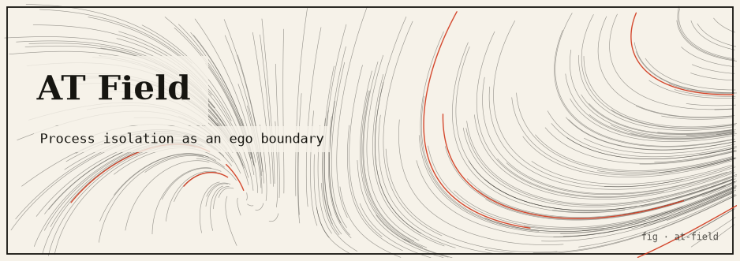

at-field
Process isolation modeled as an Evangelion AT Field — the absolute boundary that keeps one process distinct and inviolable. Memory barriers, isolation tokens, safe Rust.

The idea
In Neon Genesis Evangelion, the AT Field (Absolute Terror Field) is the boundary of self — the barrier that makes each consciousness distinct and inviolable. Without it, individuation collapses.
This package models the AT Field as a process isolation primitive in Rust. Each process (thread) holds an unforgeable isolation token that acts as a type-level capability — Rust’s ownership system enforces that tokens cannot be copied or sent across thread boundaries without explicit “AT Field penetration” (a deliberate, observable handshake). Memory access between processes is mediated by message passing; direct shared memory access is prevented by type constraints.
How it works
- Each simulated process holds an
AtField<T>token that is!Send + !Sync— it cannot be transferred across thread boundaries without an explicit penetration protocol. - Cross-process communication goes through a typed channel that records the “field penetration event” before allowing data transfer.
- AT Field strength is modelled as a rate limit on cross-process messages: high strength = low message rate; collapsed field = unlimited messages (Third Impact).
- The collapse can be triggered deliberately, demonstrating what happens to isolation when boundaries dissolve.
Run it
git clone https://github.com/caelum0x/awesome-mad-projects.git cd at-field cargo test cargo run # Process Unit-01 AT Field strength: 0.92 (near-maximum) # Cross-process message from Unit-02: BLOCKED (field intact) # Lowering field to 0.00... # Cross-process message: DELIVERED (field collapsed)